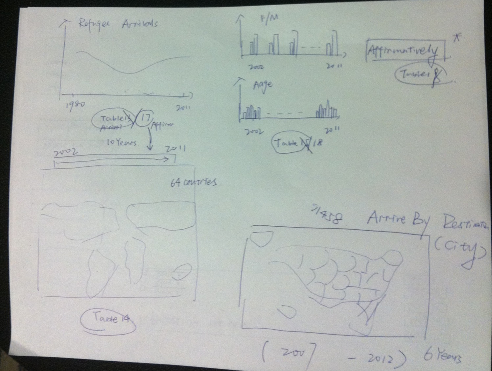

My Master's Project is an individual work in the form of interactive designs and print stories. Prof. Emily Bell is my faculty adviser at Columbia Journalism School. The project is about the changing history of refugees in America for the past ten years.
I'm a graudate student, pursuing my dual master’s degree in Journalism and Computer Science at Columbia University. I'm interested in computational journalism and China media studies. My Tumblr Blog.
Every year millions of people around the world are displaced by war, famine, and civil and political unrest. United States considers persons for resettlement to the U.S. as refugees. Every year, the U.S. President consults with Congress and establishes the proposed ceilings for refugee admissions for the fiscal year. The goal of this project is to visualize the refugee data from 2002 to 2011 fiscal years, providing readers an overview of the situation in the states. Since I'm based in New York, I'll also interview several political refugess in the city.
I have two official data sources: Department of Homeland Security's Yearbook of Immigration Statistics, and Bureau of Population, Refugees, and Migration's Admissions & Arrivals Reports (Refugee Processing Center).
The Yearbook of Immigration Statistics offers raw data in CSV format. I only need to use Table 14, 17, and 18. I also need to clean the data and transform them to JSON files. The data is mainly a collection of refugee's nationality information. However, Refugee Processing Center provides a different kind of data. They tracked where the refugee has settled down in the states.
I drawn the prototype on paper. Possible visualizations include choropleth maps, bar charts, line charts, and sortable tables. Scroll bar is drawn on the graph in order to show the yearly changes. Prototyping serves to provide specifications for a real, working system rather than a theoretical one. It helps me to think about the UI and functions. 
This site is built on GitHub. In order to customize it, I re-coded it with HTML + CSS. Here's a list of libraries and tools I used for this project:
- Wikipedia has quite a few Scalable Vector Graphics (SVG) maps under the common creatives license. I use this blank state map as the canvas.
- Raphael JavaScript Library is used to display vector graphics on the web.
- jQuery JavaScript Library handles the animation and interactions for web development.
- Zoom and Pan JavaScript Library allows users to pan and zoom on the map.
- Tablesorter JavaScript Library parses and sorts many types of data in a cell.
- StateFace Font, made of tiny state shapes and developed by ProPublica, is used to go along with each state name, making the visualization more straightforward.
- D3 JavaScript library is used for manipulating documents based on data. It's a very populat data-driven approach to DOM manipulation.
- Google Refine is a power tool for working with messy data. It helps transform CSV to JSON.
I open sourced my project code online. At some point users may find themselves wanting to contribute to someone else's project, or would like to use someone's project as the starting point for their own. This is known as "Forking A Repo" on GitHub.
$cd your repo
# Changes the active directory in the prompt to the newly cloned your directory
$ git remote add upstream https://github.com/shujianbu/master_project.git
# Assigns the original repo to a remote called "upstream"
$ git fetch upstream
# Pulls in changes not present in your local repository, without modifying your files
I use my Google Analytics tracking ID to generate detailed statistics about the traffic to this website. I want to know what kind of story users like most by analyzing the clicks. I might also want to where readers come from, and how they find this site.
try {
var pageTracker = _gat._getTracker("Your Google Analytics ID");
pageTracker._trackPageview();
} catch(err) {}
I embedded the ShareThis plugin (JavaScript ), so that users can easily share this site with their friends. People who read this might want to tell their own stories of coming to the states. Users must log in their accounts in order to share the visualizations and stories on their social networking pages.
<span>st_url='Your URL' st_title='Your Project Title' class='st_facebook' displayText='Facebook'</span>
<span>st_url='Your URL' st_title='Your Project Title' class='st_twitter' displayText='Tweet'</span>
<span>st_url='Your URL' st_title='Your Project Title' class='st_linkedin' displayText='LinkedIn'</span>
A seminar I took at Columbia - Frontier Computational Journalism - taught me the basic guidelines for doing visualizations. FlowingData, owned by Nathan Yau, showed me some visualization skills. Jason Sundram's GitHub provided some source code about making Choropleth Map. This website theme is designed by orderedlist. I got to the story of Gao Yaojie through a graduate student Huang Hongxiang at Columbia University's School of International Public Affairs. My friend Martha Yuan Tao offers me her advices as the reader. My laguage tutor Patty Lowy helped me with the writing.
Having your own stories to share? Or if you have any suggestion, please feel free to email me.